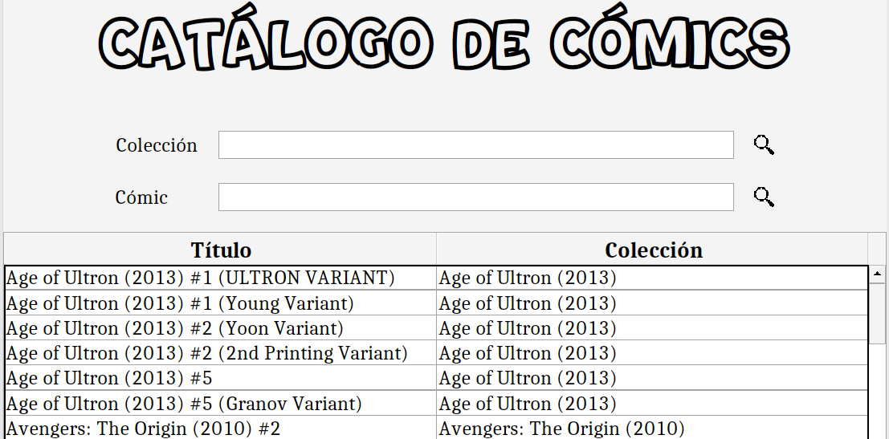
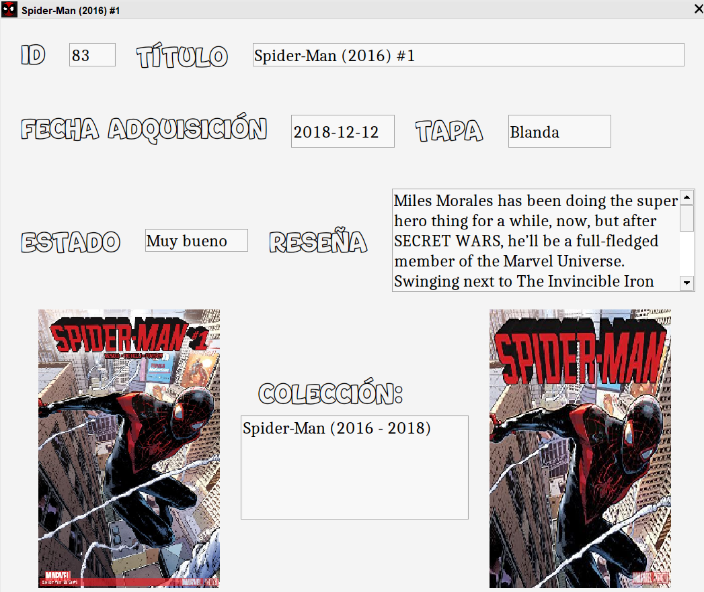

Búsqueda de cómics

Esta pantalla permite la visualización de los cómics existentes en la librería a partir de la realización de un filtrado según colección
del cómic o título de cómic. Los datos son mostrados de 100 en 100 en una tabla. Para poder visualizar todos los cómics desde el principio tras
realizar una búsqueda, se debe realizar otra búsqueda sin texto.
Por otra parte, tras hacer doble clic sobre un cómic en la tabla, se abre un pequeño diálogo donde se muestran los detalles del cómic seleccionado,
incluyendo en la parte inferior la imagen de la portada del cómic (a la izquierda) y el nombre e imagen de la portada de su colección (a la derecha).
Su aspecto es el siguiente:
